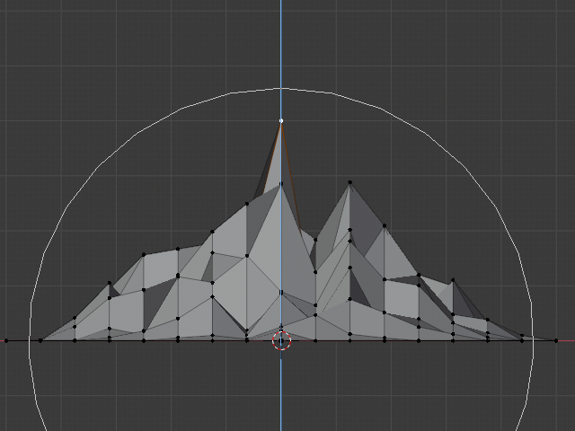
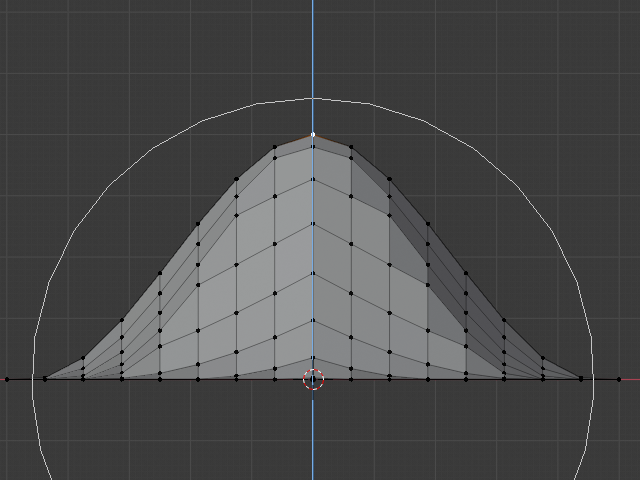

Proportional Edit¶
Proportional Edit is a way of transforming selected elements (such as vertices) while having that transformation affect other nearby elements. For example, having the movement of a single vertex cause the movement of unselected vertices within a given range. Unselected vertices that are closer to the selected vertex will move more than those farther from it (i.e. they will move proportionally relative to the location of the selected element). Since Proportional Editing affects the nearby geometry, it is very useful when you need to smoothly deform the surface of a dense mesh.
Note
Sculpting
Blender also has Sculpting that contains brushes and tools for proportionally editing a mesh without seeing the individual vertices.
Object Mode¶
Reference
| Mode: | Object Mode |
|---|---|
| Menu: | Via the  icon in the header. icon in the header. |
| Hotkey: | O |
Proportional Editing is typically used in Edit Mode, however, it can also be used in Object Mode. In Object Mode the tool works on entire objects rather than individual mesh components.
In the image below, the right cylinder is scaled along the Z axis. When the Proportional Editing is enabled, the adjacent cylinders are also within the tool’s radius of influence.

Proportional Editing in Object Mode.
Edit Mode¶
Reference
| Mode: | Edit Mode |
|---|---|
| Menu: | and via the highlighted icon |
| Hotkey: | O, Alt-O, Shift-O |
When working with dense geometry, it can become difficult to make subtle adjustments to the vertices without causing visible lumps and creases in the model’s surface. When you face situations like this the Proportional Editing tool can be used to smoothly deform the surface of the model. This is done by the tool’s automatic modification of unselected vertices within a given range.

Proportional Editing in Edit Mode.
Influence¶
You can increase or decrease the radius of the tool’s influence with the mouse wheel WheelUp, WheelDown or PageUp, PageDown respectively. As you change the radius, the points surrounding your selection will adjust their positions accordingly.

Influence circle.
Options¶

Proportional Editing tool. |
The Proportional Editing mode menu is on the 3D View header.
- Disable O, Alt-O
- Proportional Editing is Off, only selected vertices will be affected.
- Enable O, Alt-O
- Vertices other than the selected vertex are affected, within a defined radius.
- Projected from View
Depth along the view is ignored when applying the radius.

The difference between regular and Projected (2D) proportional option (right).
- Connected Only
- Rather than using a radius only, the proportional falloff spreads via connected geometry. This means that you can proportionally edit the vertices in a finger of a hand without affecting the other fingers. While the other vertices are physically close (in 3D space), they are far away following the topological edge connections of the mesh. The icon will have a gray center when Connected is active. This mode is only available in Edit Mode.
- Falloff
- While editing, you can change the curve profile used by either using the header icon Falloff menu, or by pressing Shift-O to toggle between the various options.

Constant, No Falloff. |

Random Falloff. |

Linear Falloff. |

Sharp Falloff. |

Sphere Falloff. |
|

Smooth Falloff. |

Inverse Square Falloff. |
{kind=link}
{kind=link}
{kind=link}
{kind=link}